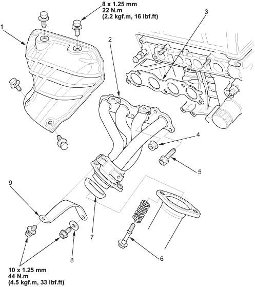

 |
- COVER
- EXHAUST MANIFOLD
- GASKET
Replace
- SELF-LOCKING NUT
10 x 1.25 mm
44 Nm (4.5 kgf/m, 33 lbf/ft)
- 10 x 1.25 mm
44 Nm (4.5 kgf/m, 33 lbf/ft)
- 8 x 1.25 mm
22 Nm (2.2 kgf/m, 16 lbf/ft)
Replace.
Tighten the bolts in steps, alternating side-to-side.
- GASKET
Replace.
- WASHER
- EXHAUST MANIFOLD BRACKET
|